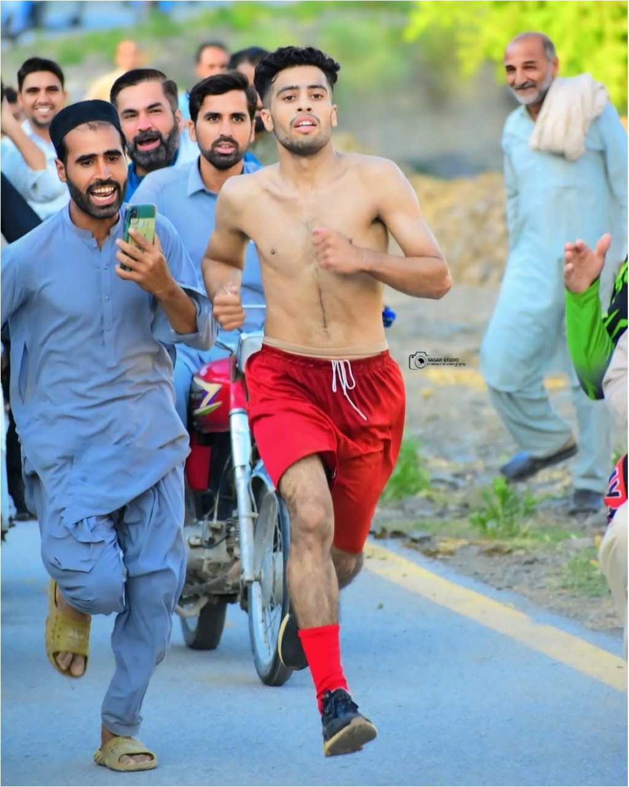

OFFICIAL RACE WEBSITE SEASON 03
One community.
One starting line.
Welcome to Khawrai Marathon Race - a celebration of endurance, sportsmanship and the spirit that brings our communities together.
RACE DAY15 November 2026 · 4:00 PM PKT

THE RACE CONTINUES2026
KRun with purpose.Celebrate every runner. Honour every finish.
KHAWRAI MARATHON · SEASON THREE
03 SEASONS OF COMMUNITYKHAWRAI · KHYBER PAKHTUNKHWAEST. THROUGH COMMUNITY SPORT
SAVE THE DATE
Race day, at a glance.
Keep the key details close and use the official pages for live updates and announcements.
THE PODIUMRun for the moment.
Run for the moment.
Earn the honour.
Recognising the top three finishers with prize money and a trophy. Official places are published on the live results page.
View live standingsFIRST PLACE
Champion
Rs. 15,000
Winning Trophy
Gold podiumSECOND PLACE
Runner-up
Rs. 10,000
Trophy
Silver podiumTHIRD PLACE
Third place
Rs. 5,000
Trophy
Bronze podium

THREE
MORE THAN A RACEA local tradition.
Discover the story of KMR-S3
A local tradition.
A shared future.
Khawrai Marathon Race grows from the energy of its runners and the support of the community. Season Three carries that spirit forward with a wider invitation, transparent public updates and an official results experience.
01
Sport for everyoneCelebrate commitment, training and participation.
02
Transparent updatesUse official pages for runner information and results.
03
Community prideBring people together through a shared sporting event.
FOLLOW THE JOURNEYEvery runner has a story.
Every runner has a story.
Follow race day with us.
Check the latest standings, explore the runners and keep up with official announcements.